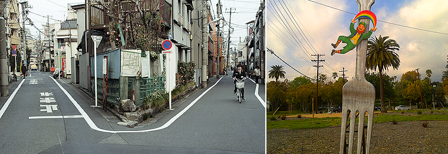

Transitive, Intransitive, Confusing, Verbs.
When you come to a fork in the road, take it. - Yogi Berra

Transitive and intransitive verbs. Don’t worry if you have no idea what these words mean. I still don’t know. I do, however, know exactly how they work, and have spent a lot of time figuring out how to explain it in a simple, concise, and very useful way. In fact, we’ve been working towards this point for a while now. A lot of the previous lessons were designed to make this chapter easier for you.
Now, back in my day, we learned about transitive and intransitive verbs way late. This is (supposedly) advanced stuff, yet, it’s used in everyday Japanese and you see these kinds of verbs everywhere. They’re super useful, and you need a while to practice them. Technically, most Japanese learners know about transitive and intransitive verbs, but they’re never very confident in how, why, and where to use them. That’s why I think it’s important I explain these concepts early so you can spend the next couple months getting good at them. Let’s get going. Here’s the skinny on how transitive and intransitive verbs work:
Transitive Verbs #
Transitive verbs are verbs with which you (or someone else) has had a direct influence on. You / someone else has directly done something to something. An action has taken place, and somebody is responsible for it. Some examples:
子供を起こした ／ こども を おこした
(I) woke the childテレビを消した ／ テレビ を けした
(I) turned off the televisionドアを開けた ／ ドア を あけた
(I) opened the door
As you can see, with all of these, someone had a direct impact on the object of the sentence (the child, the TV, and the door).
Intransitive Verbs #
Now, intransitive verbs are a bit different. In the above (transitive) examples, someone had a direct hand in doing something directly to the object. With intransitive verbs, it’s the opposite. You don’t have a direct impact on whatever it is that’s happening. Let’s use the same objects as before and see what intransitive verbs would look like.
子供が起きた ／ こども が おきた
The child woke upテレビが消えた ／ テレビ が きえた
The television turned offドアが開いた ／ ドア が あいた
The door opened
In all of the intransitive sentences, you’ll probably notice a few things right off the bat.
1. The verbs have changed! Okay, so the kanji is the same, and the sound is sort of the same, but the words are different. Weird. In English, we do use transitive and intransitive verbs, but often times it is the same exact word. For example, “I turned off the TV” and “The TV turned off” have two different meanings, but the word “turned off” is still consistent throughout. In Japanese, though, the actual verb changes as well, which means we’ll be learning two versions of a lot of verbs here in just a minute.
2. All the sentences have nothing to do with you. You didn’t do any of these things and neither did anyone else. They are passive actions that just happened on their own. The child woke up on his/her own (i.e. you didn’t wake the child up), the television turned off on its own (maybe the power went out), and the door opened (maybe the wind pushed it open, or someone is on the other side pushing it open and you don’t see them). Do you see the difference between transitive and intransitive verbs now? If not, compare the sentence pairs and you should be able to see it.
3. Intransitive sentences use が as their particle. Remember? because you aren’t directly affecting anything, が is the right particle to use (and sometimes は). With intransitive verbs, you’ll mostly see が being used. You’re identifying what’s happening to the object (whatever comes before the が) and not doing something to it. When you think intransitive, you should think が as well.
Telling Them Apart #
It’s going to be a little while before you memorize which verb is transitive and which verb is intransitive. There are a lot of them. Luckily, you can just learn the most common ones and get away with that. Over time you’ll come to learn other less common ones, but the goal right now is to get you using the best ones comfortably.
But if you don’t know a lot of transitive or intransitive verbs, how can you tell them apart? How will I know my はじめるs from my はじまるs? There’s a couple of tricks that should help, though in the end just learning both the transitive and intransitive form of each verb is probably the best way to do it. Luckily for you, you actually know a lot of these already (at least when it comes to the transitive side of things). Here’s some tips:
- Intransitive (passive / no action by you or someone else) verbs usually use the particle が. If you see が, you can pretty safely assume that this verb is intransitive.
- Transitive (action made by you or someone else) verbs usually use the particle を (that is, of course, unless they use で or に). As you probably remember, を signifies that you are doing a direct action to an object (whatever comes before the を), which makes sense since that’s what transitive verbs are already all about.
- If a person isn’t involved in something, it’s probably going to be an intransitive verb. Now, don’t confuse this with sentences that just don’t have a 私 or nameさん in them. If you remember correctly, you often omit the “I” or the “name” because it’s often assumed. You have to make sure you know that the sentence doesn’t have anything to do with a person to make this work.
Like I said, though, it’s best to just learn the vocabulary and how they are used. Since both the transitive and intransitive version of each verb are pretty similar, it can be confusing for a while. We’ll spend a little while now studying the words themselves, and make sure to keep practicing them as we continue through various lessons to help you learn and use the most commonly used transitive / intransitive combinations.
Chapter Vocabulary #
| Transitive | Meaning | Intransitive |
Meaning |
| 決める（きめる） | to decide | 決まる（きまる） | to be decided |
| 汚す（よごす） | to make dirty | 汚れる（よごれる） | to get dirty |
| 戻す（もどす） | to return | 戻る（もどる） | to return |
| 起こす（おこす） | to wake up | 起きる（おきる） | to wake up |
| 出す（だす） | to put/take out | 出る（でる） | to leave / come out |
| 落とす（おとす） | knock down | 落ちる（おちる） | to fall |
| 止める（とめる） | to stop | 止まる（とまる） | to stop |
| 入れる（いれる） | to insert | 入る（はいる） | to enter |
| 閉める（しめる） | to close | 閉まる（しまる） | to be closed |
| 開ける（あける） | to open | 開く（あく） | to be opened |
| つける | to attach | つく | to be attached |
| 消す（けす） | to erase * | 消える（きえる） | to disappear * |
| 壊す（こわす） | to break | 壊れる（こわれる） | to be broken |
| 届ける（とどける） | to send / deliver | 届く（とどく） | to be delivered / to arrive |
| 見つける（みつける） | to find | 見つかる（みつかる） | to be found |
| 始める（はじめる） | to begin | 始まる（はじまる） | to begin |
| 増やす（ふやす） | to increase | 増える（ふえる） | to increase |
| 立てる（たてる） | to stand up | 立つ（たつ） | to stand |
| 乗る（のる） | to board | 乗せる（のせる） | to board |
| 返す（かえす） | to bring back | 変える（かえる） | to return |
| 直す（なおす） | to repair | 直る（なおる） | to be repaired |
| 倒す（たおす） | to overthrow | 倒れる（たおれる） | to fall / tumble |
| 集める（あつめる） | to collect | 集まる（あつまる） | to gather |
| 掛ける（かける） | to hang up | 掛かる（かかる） | to hang |
| 焼く（やく） | to burn | 焼ける（やける） | to be burned |
| 見る（みる） | to see | 見える（みえる） | to be visible |
| 聞く（きく） | to hear | 聞こえる（きこえる） | to be audible |
* When it comes to turning off things that run on electricity (lights, televisions, etc), you’ll also see this verb being used. You are “erasing” the light when you turn something off (also used as an example above).
Practicing The Vocabulary #
Okay, I know, it’s a heckuva lot of vocabulary to learn. I don’t expect you to learn it all at once. Maybe over the next month or so. That’s way better than most learners who tend to struggle through the difference between transitive and intransitive verbs (because they don’t formally know they actually exist). You know they exist, and you know exactly how they tick, which means learning these should be a lot easier than normal. We’ll do a few things.
- I’ve created a list on Anki that you’ll be able to use to study. Study it a bit every day and review the reviews Anki wants you to. It’ll take a while, but nobody said this would be easy.
- I’ve also created four different lists of the same grammar (in different orders). That way you can take a list, cover one half, and see if you can figure out the other half based on what you have on the left / right side. Cover one side and write the transitive or intransitive pair verb next to it (hiragana is okay, kanji isn’t what you should be focusing on for this).
- Pretty much every chapter and every story from here on out will surely have an intransitive / transitive verb somewhere. I’ll try to point them out for a while so you know what you’re looking at.
For now, go ahead and study the vocabulary above with the Anki list. You don’t have to learn them all now, but it is really important you study them for a little bit every day, for at least the next month or so.
Transitive & Intransitive Verbs on Anki
Optional Reading:
Want a giant list of transitive and intransitive verbs? Take a look at Monash’s list. It’s huge… so huge that it’s probably more of a hindrance than a help. If you really wanted to see pretty much everything, though, this is your list. Try not to get overwhelmed, though. There’s absolutely no reason or sense in studying all or even half of these (right now anyways).
Before Moving On:
- Understand the difference between transitive and intransitive verbs (and know which one does what)
- Begin studying the Transitive & Intransitive Verbs list on Anki. Study for as long as you can before moving on. Make sure you come back to this study list as often as possible over the next 30 days or so (or until you’ve “mastered” the list).
In the next chapter, we’ll continue to practice transitive and intransitive verbs while at the same time learning about て form. This will be a good way to practice what you’ve just learned now and learn something new at the same time. It is important that you study the vocab above and at least get some handle on them, though, as this will make it a lot easier to get through the next chapter!